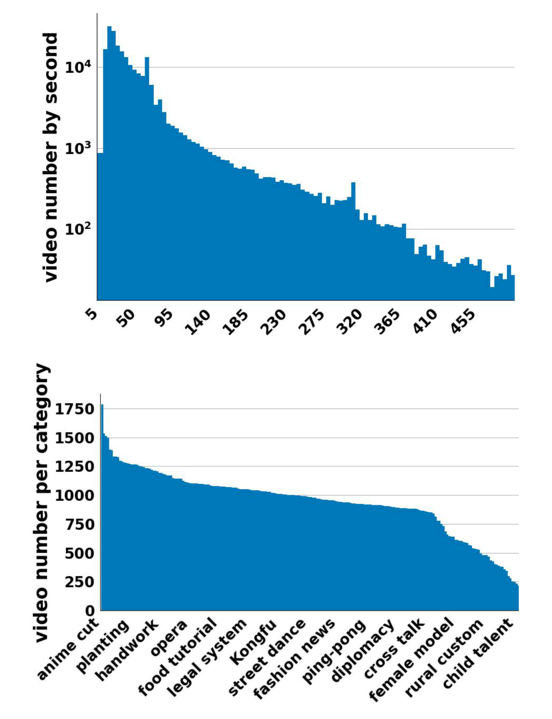

Dataset Overview
Part of the label topology

Dataset Distribution

Several large-scale video datasets have been published these years and have advanced the area of video understanding. However, the newly emerged user-generated short-form videos have rarely been studied. This paper presents USV, the User-generated Short-form Video dataset for high-level semantic video understanding. The dataset contains around 245K videos collected from UGC platforms by label queries without extra manual verification and trimming. Although video understanding has achieved plausible improvement these years, most works focus on instance-level recognition, which is not sufficient for learning the representation of the high-level semantic information of videos. Therefore, we further establish two tasks: topic recognition and video-text retrieval on USV. We propose two unified and effective baseline methods called Multi-Modality Fusion Network (MMF-Net) and Video-Text Contrastive Learning (VTCL) to tackle the topic recognition task and video-text retrieval respectively, and carry out comprehensive benchmarks to facilitate future researches.
| Type | Model | Pretrained Data |
|---|---|---|
| Vision | TSN-ResNet50 | ImageNet-USV |
| Text | multilingual BERT | 104 languages |
| Audio | Log-Mel Spectrogram | - |